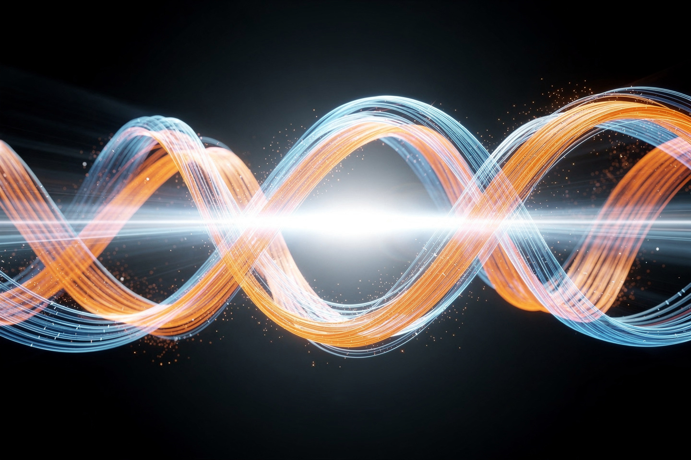
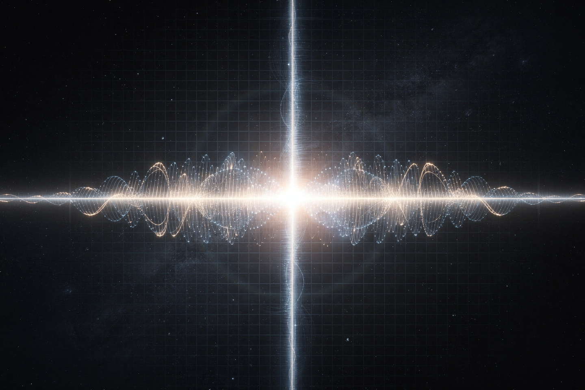

Рабочая заметка · электромагнетизм · часть IV
Уравнения Максвелла: как рождается свет
Четыре коротких уравнения, которые объяснили магниты, генераторы, радиоволны — и, неожиданно для самого Максвелла, оказались формулой для самого света.
В 1860-х Джеймс Клерк Максвелл собрал разрозненные экспериментальные законы Кулона, Гаусса, Ампера и Фарадея в систему из четырёх уравнений — и обнаружил недостающий кусочек: без него уравнения противоречили сохранению заряда. Добавив «ток смещения», он не просто починил математику — уравнения тут же предсказали волны, бегущие со скоростью, которая идеально совпала со скоростью света. Свет оказался электромагнитной волной. В этой заметке — все четыре уравнения по отдельности, а затем сборка: как из них рождается самораспространяющаяся волна.


Четыре уравнения в двух словах
| № | Название | Смысл одной фразой |
|---|---|---|
| I | Гаусса (E) | заряд — источник электрического поля, разбегающегося наружу |
| II | Гаусса (B) | у магнитного поля нет источника-«заряда» — оно всегда замкнуто |
| III | Фарадея | меняющийся магнетизм рождает вихревое электрическое поле |
| IV | Ампера-Максвелла | ток И меняющееся электрическое поле рождают вихревое магнитное |
Симметрия почти идеальна: III и IV — зеркальные утверждения («меняющееся B рождает E» и «меняющееся E рождает B»), а I и II — «заряд для E есть, для B — нет». Именно эта почти-симметрия и «нехватка» одного члена в исходном законе Ампера навела Максвелла на мысль, что чего-то не хватает — и привела к открытию тока смещения (§5).
Закон Гаусса: заряд как источник поля
Формулировка. Электрическое поле «расходится» из заряда пропорционально его величине:
В интегральной, более наглядной форме: поток электрического поля через любую замкнутую поверхность пропорционален заряду внутри неё. Наглядно — представьте заряд как «кран», из которого во все стороны бьют струи силовых линий; сколько бы поверхность вы ни нарисовали вокруг крана, через неё пройдёт одно и то же количество «воды», зависящее только от мощности крана (величины заряда), не от формы и размера поверхности.
Если применить закон Гаусса к одиночному точечному заряду и посчитать поле на сфере радиуса r вокруг него, получается ровно закон Кулона (сила между двумя зарядами убывает как 1/r²) — исторически более ранний, найденный экспериментально ещё в 1785 году, за 80 лет до Максвелла. Закон Гаусса — не новый факт, а более общая и мощная переформулировка того же самого.
Закон Гаусса для B: монополей нет
Формулировка. У магнитного поля нет источника — оно нигде не «начинается» и не «заканчивается»:
Разломите магнит пополам, надеясь получить отдельно «северный» кусок и отдельно «южный» — не выйдет: у каждого обломка снова будут оба полюса. Магнитные силовые линии всегда замкнуты сами на себя (выходят из северного полюса и обязательно возвращаются в южный), в отличие от электрических, которые начинаются на положительном заряде и обрываются на отрицательном (или уходят в бесконечность).
Некоторые теории за пределами уравнений Максвелла (в частности, теория Великого объединения) предсказывают существование магнитных монополей — отдельных «северных» или «южных» зарядов. Их искали десятилетиями (включая знаменитый ложный сигнал детектора Блас Кабреры в 1982 году), но убедительно не нашли — в рамках классической электродинамики закон ∇·B = 0 остаётся точным экспериментальным фактом, не просто удобным приближением.
Закон Фарадея: магнетизм рождает ток
Формулировка. Меняющееся во времени магнитное поле порождает вихревое электрическое поле — а значит, и ток в замкнутом проводнике:
Именно так работает любой электрогенератор: механически вращают магнит рядом с катушкой (или катушку рядом с магнитом — по закону важна только относительная скорость изменения потока), поток постоянно меняется, и в проводе непрерывно наводится ЭДС. Знак минус — правило Ленца: наведённый ток течёт в таком направлении, что его собственное магнитное поле противодействует изменению, которое его вызвало (иначе получился бы вечный двигатель — эффект «подпитывал» бы сам себя всё сильнее, что запрещено законом сохранения энергии).
Численный пример: катушка из N = 100 витков находится в магнитном поле, поток через один виток растёт равномерно от 0.02 Вб до 0.05 Вб за 0.5 с. Найдите наведённую ЭДС.
Модуль ЭДС — 6 вольт; знак говорит только о направлении тока (противодействующем росту потока), не о величине.
Закон Ампера-Максвелла: ток рождает магнетизм
Формулировка. Электрический ток И меняющееся во времени электрическое поле порождают вихревое магнитное поле:
Первое слагаемое (μ0J) — это исходный закон Ампера (1826): ток создаёт вокруг себя круговое магнитное поле, легко проверить компасом рядом с проводом под напряжением. Второе слагаемое — вклад самого Максвелла, «ток смещения»: даже там, где реального тока нет (например, между обкладками заряжающегося конденсатора, в вакууме), быстро меняющееся электрическое поле производит тот же эффект — рождает магнитное поле.
Без тока смещения закон Ампера в старом виде математически противоречил сохранению заряда при разрыве цепи (например, у конденсатора): применённый к двум разным поверхностям, натянутым на один контур, он давал разные ответы — абсурд. Добавление члена μ0ε0∂E/∂t устранило противоречие — и, как оказалось, заодно сделало уравнения симметричными и способными описывать самораспространяющуюся волну (§6). Редкий в истории физики случай, когда починка математической нестыковки привела к величайшему открытию.
Сквозной пример: рождение света
Соберём законы Фарадея (§4) и Ампера-Максвелла (§5) вместе — и увидим, почему электромагнитное поле умеет распространяться само, без проводов и магнитов.
- Пусть где-то в пространстве электрическое поле E начинает меняться во времени (например, из-за колебания заряда в антенне).
- По закону Ампера-Максвелла (§5, второе слагаемое) это меняющееся E прямо здесь же порождает вихревое магнитное поле B — рядом, в соседней точке пространства, без всякого провода.
- Но у этого B тоже нет причин быть постоянным — оно тоже меняется во времени. А по закону Фарадея (§4) меняющееся B порождает вихревое E — уже ещё чуть дальше от источника.
- Получается цепная реакция: E рождает B, B рождает E, каждое — на следующем шаге чуть дальше от источника. Поле «убегает» от антенны само, без посторонней помощи — это и есть электромагнитная волна.
Подставив оба уравнения друг в друга (математически — взяв ротор от одного и подставив в другое), получается обычное волновое уравнение, а скорость волны выражается только через две константы — электрическую и магнитную постоянные:
Эти две константы (ε0 и μ0) были известны из чисто электрических и чисто магнитных лабораторных опытов — измерялись конденсаторами и катушками, безо всякого упоминания оптики. Когда Максвелл в 1862 году подставил их числа в формулу (2) и получил величину, совпавшую с уже измеренной скоростью света, он написал: «мы вряд ли можем избежать вывода, что свет состоит из поперечных колебаний той же среды, которая является причиной электрических и магнитных явлений». Оптика оказалась разделом электромагнетизма — этого никто не ожидал.
Видимый свет, радиоволны, рентген, микроволны — всё это одна и та же электромагнитная волна, различающаяся только длиной волны (частотой колебаний E и B). Разница между FM-радио и рентгеновским снимком — не в физике явления, а только в числах.
Куда это ведёт: относительность полей
Уравнения Максвелла хранят ещё один сюрприз, замеченный не сразу: они не меняют форму при преобразованиях Лоренца (то есть уже «релятивистски правильны»), в отличие от механики Ньютона, которую пришлось модифицировать. Более того — то, что один наблюдатель назовёт «чистым магнитным полем», другой наблюдатель, движущийся относительно первого, увидит как смесь электрического И магнитного полей.
Классический пример: неподвижный заряд рядом с проводом с током не испытывает электрической силы (провод электрически нейтрален), только магнитную (если движется). Но для наблюдателя, который сам движется вместе с зарядом, ситуация выглядит иначе: из-за лоренцева сокращения длины плотности положительных и отрицательных зарядов в проводе перестают в точности компенсироваться — провод выглядит слегка заряженным, и появляется настоящая электрическая сила. Один и тот же физический эффект — в зависимости от системы отсчёта его можно назвать «магнитным» или «электрическим». Именно эта связь — одна из исторических дорог, по которой Эйнштейн пришёл к специальной теории относительности (1905), отталкиваясь именно от загадки уравнений Максвелла, а не от механики.
На сайте это отдельный закон, если хочется пройти глубже:
Эксперимент дома
Намотайте 30-40 витков изолированного медного провода на большой железный гвоздь, подключите концы к пальчиковой батарейке (1.5 В) на несколько секунд (не дольше — провод и батарейка нагреваются).
Что заметить гвоздь начнёт притягивать скрепки и другие мелкие металлические предметы — прямая демонстрация закона Ампера (§5, первое слагаемое): ток в проводе создаёт магнитное поле, а намотка витками в катушку концентрирует и усиливает это поле внутри и вокруг гвоздя (который к тому же сам намагничивается, усиливая эффект).
Расчешите сухие волосы пластиковой расчёской (или потрите воздушный шарик о шерстяной свитер) и поднесите к тонкой струйке воды из крана.
Что заметить струйка воды заметно отклонится в сторону расчёски. Трение «выбило» электроны с одного материала на другой, создав на расчёске заряд — а по закону Гаусса (§2) вокруг заряда есть электрическое поле, которое наводит на нейтральных, но поляризующихся молекулах воды слабый противоположный заряд и притягивает их (эффект называется поляризацией диэлектрика).
Задачи для проверки
Сначала подумайте сами, затем откройте решение. Решение везде идёт по схеме: Дано → Закон → Решение → Ответ.
1. FM-радиостанция вещает на частоте 100 МГц. Какая длина волны у этого радиосигнала?
Дано f = 100 МГц = 10&sup8; Гц, c ≈ 3×10&sup8; м/с (§6).
Закон связь длины волны, частоты и скорости для любой волны: λ = c/f.
Решение λ = 3×10&sup8;/10&sup8; = 3 м.
Ответ 3 метра — примерно длина небольшой антенны на радиовышке (четверть волны, 0.75 м, — стандартная практическая длина).
2. Катушка из 50 витков находится в поле, магнитный поток через которое падает с 0.03 Вб до 0.01 Вб за 0.4 с. Найдите модуль наведённой ЭДС.
Дано N = 50, ΔΦ = 0.01−0.03 = −0.02 Вб, Δt = 0.4 с.
Закон закон Фарадея (§4): ε = −NΔΦ/Δt.
Решение ε = −50·(−0.02)/0.4 = 2.5 В.
Ответ 2.5 В.
3. Рентгеновское излучение имеет длину волны около 1 нанометра (10⁻⁹ м). Это та же физическая природа, что и видимый свет, или разные явления? Обоснуйте, ссылаясь на конкретный вывод из уравнений Максвелла.
Закон вывод волнового уравнения из уравнений Максвелла (§6) — единая природа электромагнитных волн.
Решение уравнения Максвелла не содержат никакого параметра, который отличал бы «свет» от «рентгена» — из них следует единое волновое уравнение с единственной характерной скоростью c. Разные названия (радио, свет, рентген) — это просто разные диапазоны одной и той же величины: длины волны (или частоты).
Ответ та же природа — электромагнитная волна, отличие только в длине волны (у рентгена она примерно в 500 000 раз короче, чем у зелёного света).
4. Почему при попытке разломить магнит на «отдельный северный полюс» и «отдельный южный полюс» всегда получаются два новых полных магнита? Какое уравнение Максвелла это запрещает нарушать?
Закон закон Гаусса для магнитного поля (§3): ∇·B = 0.
Решение ноль в правой части (в отличие от закона Гаусса для E, §2, где справа стоит плотность заряда) означает: у магнитного поля нет аналога заряда-источника — линии поля обязаны быть замкнутыми и не могут «обрываться» на изолированном полюсе, сколько бы раз вы ни делили магнит.
Ответ закон Гаусса для B — отсутствие магнитных монополей заложено прямо в форме уравнения.
5. Заряжающийся конденсатор в вакууме создаёт магнитное поле вокруг себя, хотя реального тока между его пластинами нет (заряд просто накапливается на пластинах). Как уравнения Максвелла это объясняют?
Закон закон Ампера-Максвелла (§5), второе слагаемое — ток смещения.
Решение между пластинами конденсатора электрическое поле быстро растёт по мере накопления заряда — это и есть ∂E/∂t, «ток смещения», который по уравнению (§5) действует точно так же, как настоящий ток проводимости, и создаёт вихревое магнитное поле вокруг области между пластинами.
Ответ ток смещения — именно это слагаемое Максвелл добавил к старому закону Ампера, чтобы объяснить подобные случаи.
Опечатка, неверная формула, число не сходится, коряво объяснено — напишите нам: feedback@bridge42worlds.org. Каждое сообщение реально читается, разбирается и по нему вносится правка — это не «в стол».